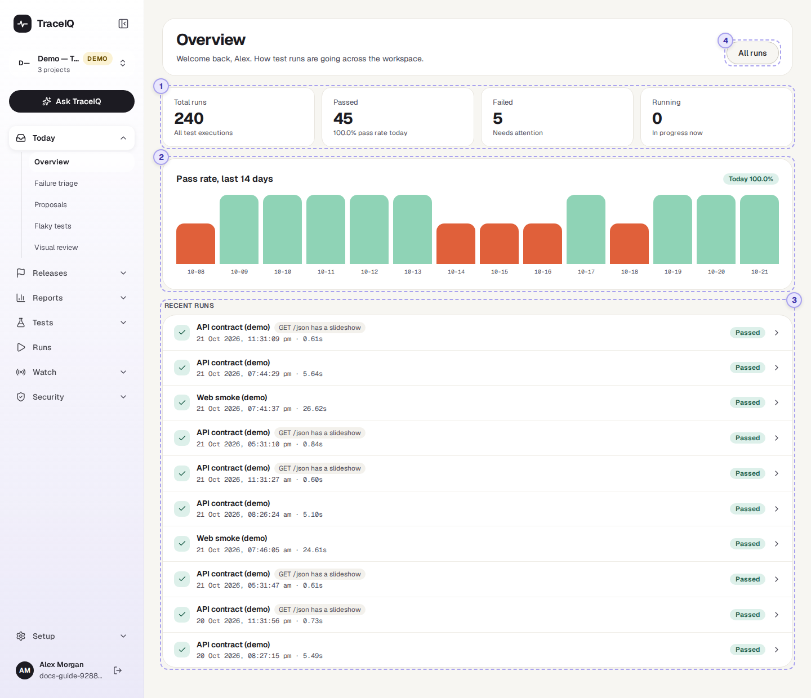
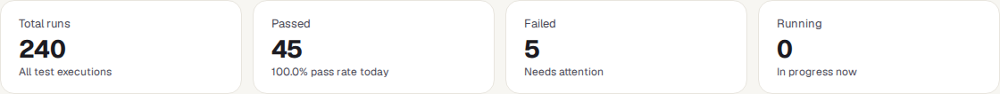
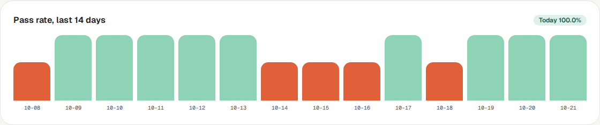
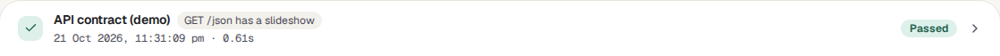

Overview
Your home page. In a few seconds it tells you how testing is going: how many runs there have been, how many passed or failed, how the pass rate has moved over the last two weeks, and what ran most recently.
What it is for
Overview answers one question: "Is everything all right, or does something need my attention?" It is the first page you see after signing in, and the page to come back to when you want a quick check before a meeting, a release or the end of the day.
Testers
See at a glance whether last night's runs passed, and jump straight to the ones that didn't.
Developers
Check that the run for their change finished, and how it went.
Leads and managers
Watch the trend: is quality steady, getting better or getting worse?
Where to find it: in the sidebar, open Today → Overview. TraceIQ also opens it automatically after you sign in.
A tour of the screen
The page has four parts. The numbers on the screenshot match the sections below.

The four tiles

| Tile | What the number means |
|---|---|
| Total runs | Every run you are allowed to see, in all your projects, since the beginning. |
| Passed | How many of the 50 most recent runs passed. The small line underneath shows the pass rate for today in the project selected in the sidebar. |
| Failed | How many of the 50 most recent runs failed. If it is above zero, it says "Needs attention". |
| Running | How many of the 50 most recent runs are running right now. |
Total runs counts all of history, but Passed, Failed and Running only look at the newest 50 runs. In the screenshot, 240 runs exist in total; of the newest 50, 45 passed and 5 failed. Read the three smaller tiles as "lately", not "ever".
Also, Failed counts only runs marked Failed. Runs that ended in Error or Timed out are not in that number, so check the list of recent runs too.
Pass rate, last 14 days

One bar for each of the last 14 days, oldest on the left and today on the right. The taller the bar, the higher that day's pass rate. The label in the top-right corner repeats today's pass rate.
| Bar colour | Meaning |
|---|---|
| Green | 90% or more of that day's runs passed. A healthy day. |
| Yellow | Between 60% and 89% passed. Worth a look. |
| Orange | Less than 60% passed. Something was wrong that day. |
| Grey stub | No runs finished that day, so there is nothing to measure. |
Point at a bar to see that day's exact numbers, for example "2026-10-14: 50.0% pass rate (1 passed / 1 failed of 2 runs)".
- Only the project selected in the sidebar. The tiles and the run list cover all your projects; the chart covers one. Switch project with the project picker at the top of the sidebar.
- Pass rate = passed ÷ (passed + failed + error). Runs that were cancelled, timed out, or are still queued or running are left out, because they have no pass/fail answer.
- Re-runs that TraceIQ makes only to check a suggested fix (see Proposals) are left out too, so they can't make a day look better or worse.
- Days are calendar days in UTC. In India (UTC+5:30), a run at 2 a.m. counts towards the previous day.
If no project is selected, or the project has no runs yet, the chart is not shown.
Recent runs
The 10 newest runs across all your projects, newest first. Each row is one run:

- The icon on the left repeats the result at a glance: a tick for passed, a cross for failed or error, a spinner while running, and a dash for anything else (queued, cancelled, timed out).
- The name is the suite that ran. If only one test was run instead of a whole suite, its name appears next to it in a grey label.
- Underneath: when the run started, and how long it took.
- The coloured label on the right is the result (see the table below).
- Click anywhere on the row to open the run's own page, with every test, step, screenshot and log.
| Label | What it means |
|---|---|
| Passed | Every test in the run did what it should. |
| Failed | At least one test found a problem: something on the page or in the response was not as expected. |
| Error | Something went wrong around the test rather than in it, for example a preparation step failed. Treat it like a failure: it needs a look. |
| Running | The run is happening right now. |
| Queued | The run is waiting for a free test machine and will start shortly. |
| Cancelled | Someone stopped the run before it finished. There is no verdict. |
| Timed out | The run went past TraceIQ's time limit and was stopped. There is no verdict. (A single step waiting too long on a page is a Failed, not a time-out.) |
All runs
The All runs button in the top-right corner opens the full list of runs, with search and filters by status, browser and device. It is the same page as Runs in the sidebar.
Watch it in use
How to…
…check whether anything needs attention
- Look at the Failed tile. Zero means none of the latest runs failed.
- Scan the coloured labels in Recent runs for Failed, Error or Timed out.
- Click a run that isn't green to see what went wrong.
…see whether quality is getting better or worse
- Make sure the right project is selected at the top of the sidebar.
- Read the chart from left to right. Several orange or yellow bars in a row means a lasting problem, not a one-off.
- Point at a bar to see how many runs that day's percentage is based on. A day with 1 failed run out of 2 shows 50%, which looks worse than it is.
…look at a different project
- Click the project name at the top of the sidebar.
- Choose the project. The chart and today's pass rate update straight away.
Good to know
- It updates by itself. The tiles and the run list refresh every 15 seconds and the chart every minute, so you can leave the page open.
- You only see your own projects. Every number counts only the projects you have access to. Two people can see different numbers on the same page.
- Nothing here can be changed. Overview is read-only. To run tests, go to Tests → Suites.
- A brand-new account shows zeros and "No runs yet" until the first test runs.
Related pages
Runs
The complete list of runs, with search and filters, and each run's full result.
Failure triage
The next page in this guide: failures grouped by cause, so you fix one problem instead of reading twenty runs.
Analytics
One project over 7, 30 or 90 days: which tests fail most, which are slowest, which are flakiest.
Release readiness
A clear "ready / not ready" answer for a specific version of your app.